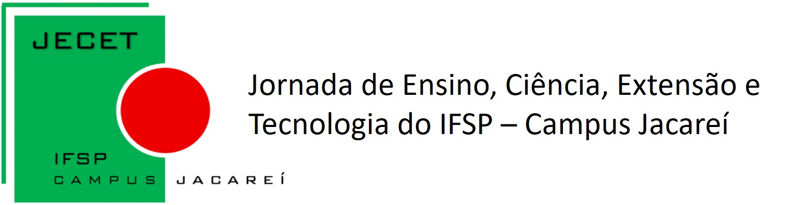
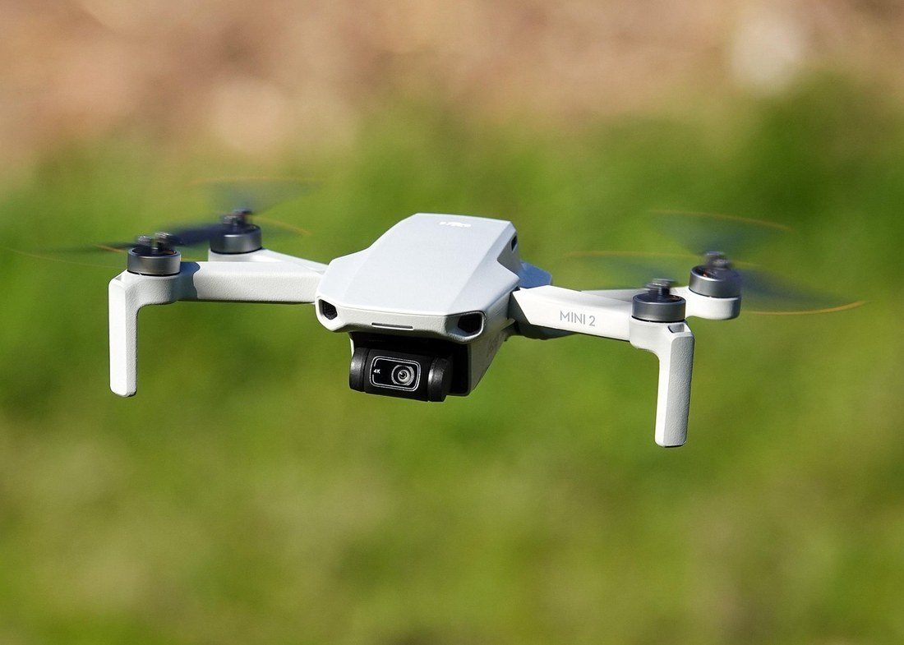
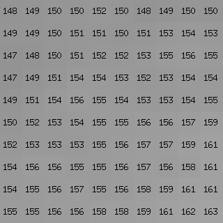
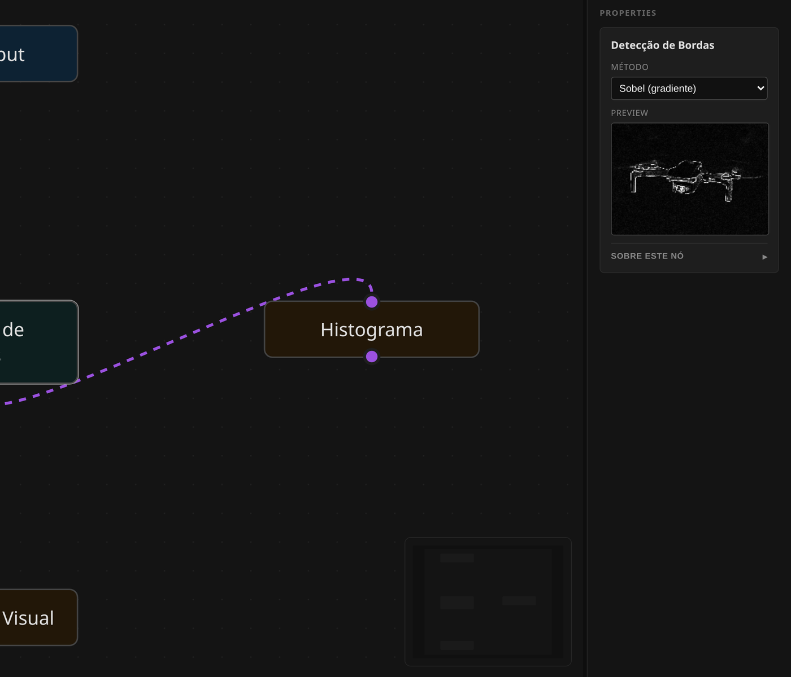
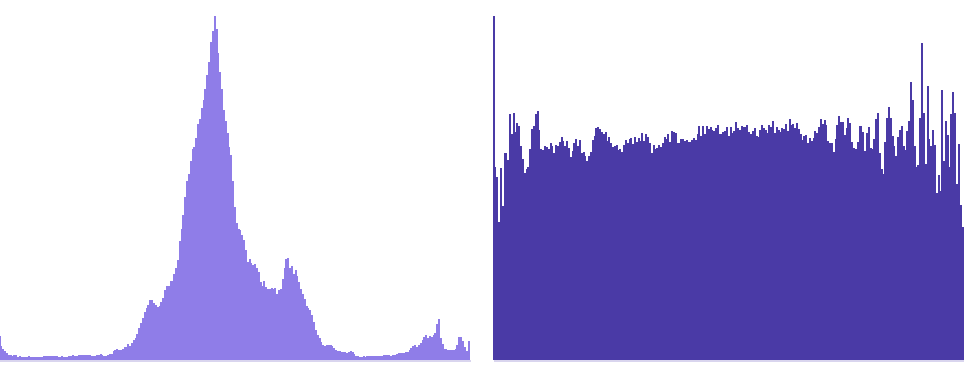
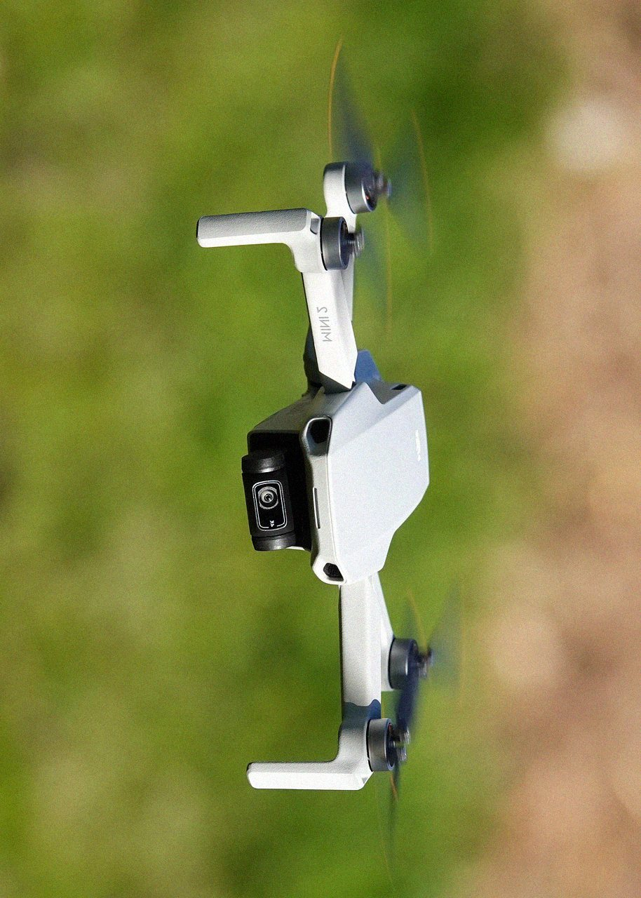
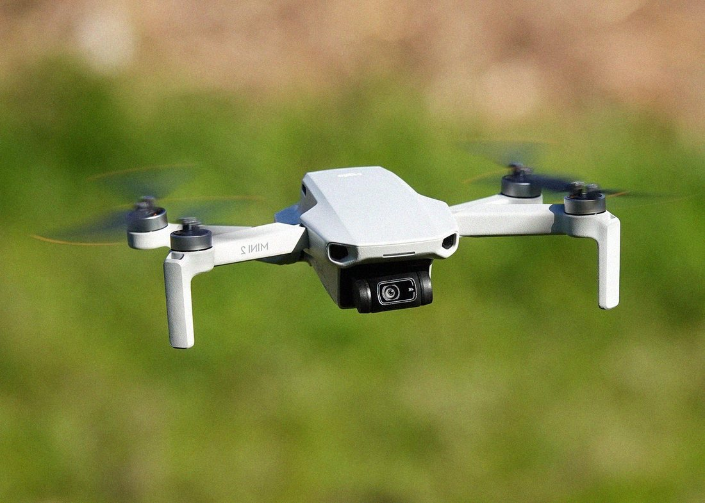
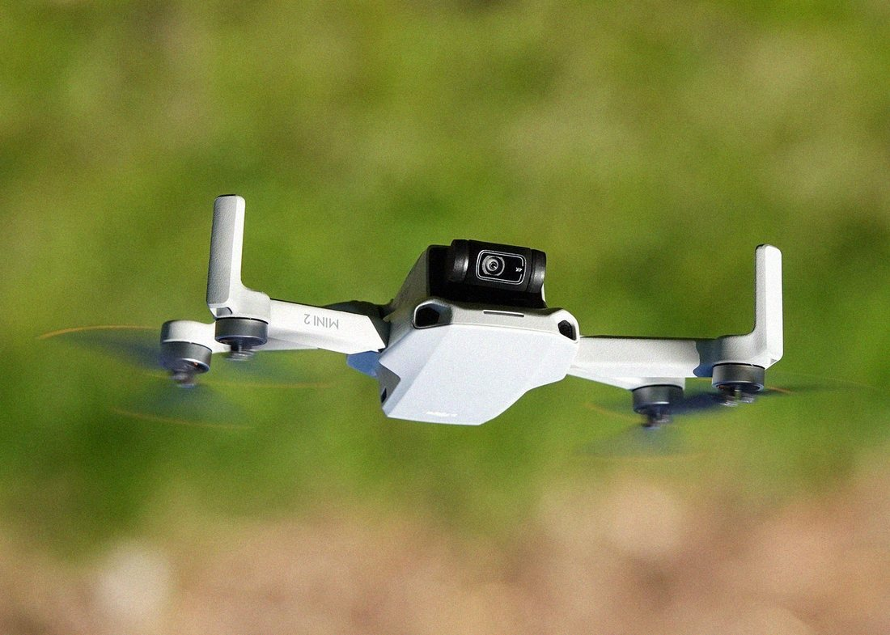
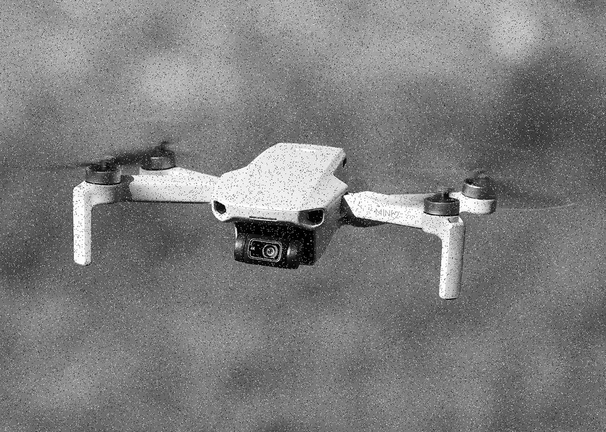

FotoFácil: um editor de imagens por nós para automatizar edições em lote sem programar
Uma imagem digital é uma matriz de números
Cada valor da matriz é a intensidade de um ponto. Processar imagem é aplicar contas sobre essa matriz: somar brilho, comparar vizinhos, filtrar frequências.
- Cotidiano: ajustar uma foto, melhorar um documento escaneado, tratar a imagem de uma câmera.
- Pesquisa: preparar, padronizar e ampliar milhares de imagens antes de treinar um modelo.
- O ponto comum: o ajuste é sempre um algoritmo. Feito à mão, ele se repete e varia; descrito como fluxo, ele se reproduz.


Automatizar em lote hoje exige programar
Editores gráficos e ferramentas visuais
- GIMP e Photoshop: fazem lote, mas por uma linguagem de script própria: a automação só chega para quem programa.
- n8n: automação visual comprovada, com nós genéricos de dados, sem processamento de imagem nativo.
- Orange: programação visual de mineração de dados, com foco em tabelas e modelos, não em pixels.
Quem não programa faz no braço
- Abrir, ajustar, exportar. Repetir para cada arquivo.
- O critério muda no meio do caminho e o lote deixa de ser comparável.
- Na pesquisa, o esforço de preparar o dado compete com o próprio método.
A lacuna: automação visual, que já provou funcionar em outras áreas, não chegou ao processamento de imagens.
Montar o processamento como um fluxo de blocos conectados: cada bloco é uma operação conhecida de processamento digital de imagens e a ligação entre eles define a ordem. O mesmo desenho roda em uma imagem ou em milhares.
O que o trabalho se propôs a fazer
Desenvolver um editor de imagens de código aberto em que o processamento é montado visualmente por nós, permitindo aplicar a mesma receita em lotes de imagens sem escrever código.
Montar sem código
Interface de arrastar e soltar que dispensa conhecimento de programação.
Repetir em lote
Executar o mesmo fluxo sobre muitos arquivos, com resultado previsível.
Cobrir PDI clássico
Do ajuste básico à análise: cor, filtros, bordas, frequência.
Servir à pesquisa
Preparar conjuntos de imagens para treinar modelos de IA.
O desenho é a receita; o sistema calcula a ordem
Cada nó declara de quais nós depende. Com isso o backend monta um grafo acíclico dirigido, resolve a ordem com uma ordenação topológica e executa cada operação uma única vez, reaproveitando resultados que duas ramificações compartilham.
Cada operação roda uma vez, mesmo que dois caminhos precisem dela.
A ordem sai do próprio desenho: quem depende vai depois.
Um ciclo (A depende de B que depende de A) é recusado antes de executar.
Duas camadas, conversando em tempo real
Roda na máquina do usuário. Nenhuma imagem sai do computador.
Cada mudança no fluxo devolve uma imagem de conferência.
O desenho fica guardado e pode ser reaberto.

28 tipos de nó, em 8 categorias
Antes de codar, o resultado esperado
Para cada operação o teste vem primeiro: ele monta uma matriz conhecida, aplica o nó e compara pixel a pixel com o resultado esperado. Só então a implementação é escrita, até o teste passar.
- Erro de arredondamento, borda ou canal aparece na hora.
- Mudar um nó sem quebrar outro deixa de depender de memória.
- É o que permite afirmar que os resultados desta apresentação são os do algoritmo.
O teste descreve o resultado esperado; a implementação vem depois, até passar. Foi assim para os 28 nós.
Escala de cinza e equalização

O desvio padrão, que mede o contraste, sai de 37,5 na escala de cinza e chega a 73,4 depois da equalização. Uma imagem equalizada usa quase toda a escala de 0 a 255.
Encontrar contornos e separar o que é objeto
- Bordas não são contorno desenhado: são a variação entre vizinhos.
- A limiarização decide o que é objeto usando o próprio histograma.
- A morfologia corrige o que a limiarização deixou quebrado.
Sobel deixa 75% da área praticamente preta e apenas 5,3% dela passa da intensidade 25. Otsu deixa 22,5% em branco e a dilatação 5×5 eleva para 25,0%. Tudo medido na saída dos próprios nós.
Da pasta de fotos ao conjunto de treino



O nó de augmentação gera variantes da mesma imagem para ampliar o conjunto. Ele usa uma semente fixa: quem repetir o fluxo obtém exatamente as mesmas variantes. É a diferença entre dados aumentados e dados aumentados de forma reprodutível.

saida/ ├─ train/ │ ├─ exp_0.png │ ├─ exp_1.png │ └─ exp_2.png ├─ val/ │ └─ exp_3.png └─ test/ ├─ exp_4.png └─ exp_5.png
6 imagens: 60% treino, 20% validação e o resto em teste, já em pastas que um framework de treino lê de imediato.
semente 42 · resultado repetívelO gargalo de quem pesquisa era preparar o dado; aqui ele virou um nó. A mesma ferramenta que ajusta a foto organiza o conjunto de treino.
Objetivo por objetivo, e o que ainda falta
- Montar sem código: nós ligados por arrastar e soltar, com a ordem calculada pelo sistema.
- Repetir em lote: atingido com ressalva, a execução ainda é sequencial, o ganho vem da repetição.
- PDI clássico: 28 nós, de brilho e contraste a Fourier, limiarização e morfologia, todos com teste.
- Servir à pesquisa: o conjunto exportado sai dividido em treino, validação e teste.
- O fluxo não é exportável: o desenho fica salvo na máquina, mas ainda não sai como arquivo para outra pessoa abrir.
- GeoTIFF multibanda ainda não é lido: os nós de sensoriamento remoto têm a matemática correta, mas foram validados sobre imagens comuns, não sobre produtos reais de satélite.
- Nós de sensoriamento remoto: dependem de imagens com bandas específicas, ainda não validados sobre dados reais de satélite.
- Persistência: encontramos um caso em que o fluxo aberto pode ser gravado vazio antes de ser lido do banco; está registrado e é o primeiro item da fila.
Ler GeoTIFF multibanda para validar os nós de sensoriamento remoto sobre dados reais · corrigir a gravação do fluxo ativo · processar o lote em paralelo.
Bases do trabalho e onde encontrá-lo
- GONZALEZ, R. C.; WOODS, R. E. Digital Image Processing. 4. ed. Pearson, 2018.
- OTSU, N. A threshold selection method from gray-level histograms. IEEE Trans. on Systems, Man, and Cybernetics, v. 9, n. 1, p. 62-66, 1979.
- COOLEY, J. W.; TUKEY, J. W. An algorithm for the machine calculation of complex Fourier series. Mathematics of Computation, v. 19, n. 90, p. 297-301, 1965.
- SOUSA, T. Dataflow programming: concept, languages and applications. 2012.
- DEMŠAR, J. et al. Orange: data mining toolbox in Python. JMLR, v. 14, p. 2349-2353, 2013.
- BECK, K. Test-Driven Development: By Example. Addison-Wesley, 2002.
- GIMP Development Team e n8n: documentação oficial de automação em lote e de fluxos visuais.
- Documentação técnica do projeto: referência dos 28 nós, mapa da arquitetura e guia de execução.